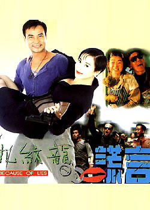

那就让男人冒死反抗强奸吧！
2006/7/22 15:13:53

“女性是否应该冒死反抗强奸”这样的话题之所以被热炒，只不过继续证明这样一个事实：一个污浊的男权世界依然污浊地存在着。当然，没有任何问题有着无条件的先验必然性，在人类曾历史的历史中，绝大多数时间只存在着这样的问题：男人是否应该冒死反抗强奸？只不过在最近的几千年中，这个问题才被无耻肮脏地改变了。
当然，即使在男人最值得骄傲的朝代里，也曾存在足够的时间让他们能恢复对“男人是否应该冒死反抗强奸”这更古老命题的原始记忆。例如在某个年代里，男人被称为面首，那个年代如今还被无耻地称为唐朝，而现在男权文化意义上的唐人街喧嚣，只是为了掩盖这段男性的面首经历，因为他们一定要掩盖这样的事实：男人的大唐朝曾为了一个让男人成为面首的女人而不再大唐朝。
男人能被强奸的事实，大概需要经常地被历史所唤醒。当然，这种强奸决不是男人肮脏、恶心的断臂山意义上谈论的。男权社会的一切命题，都不过建立在男权社会能被成立的基础上，当一个个委琐的男人用各种委琐的理由谈论着“女性是否应该冒死反抗强奸”这样的话题时，只不过是惯性地正在着仍被无耻、虚妄地惯性着的男权社会最委琐、肮脏的勾当。
男权社会的存在只是历史的笑话，要解决“女性是否应该冒死反抗强奸”这样的话题，唯一的途径就是回到这样的社会，让“男人是否应该冒死反抗强奸”这更原始的话题重新话题。在这种社会里，有足够的时间编造出诸如贞操、道德、暴力、责任等垃圾概念来教育男人；更可以编造出各种各样的猥劣制度、思维、话语来武装“让男人冒死反抗强奸”的主流意识。这种伎俩，男人其实并没有什么特别的天赋。关于男人与其贞洁及暴力的关系，可以有足够的时间编造出比如今男人的低劣意识所能编造的更出色的教材。
在那教材里，会让男人学会冒死反抗强奸的！会用一切编造的概念、制度、思维、话语、器械让男人心甘情愿地冒死反抗强奸的！会告诉男人：虽然不被强奸的男人也只是垃圾，但被强奸的男人就连垃圾都不如，他们没有生存的意义，死去吧！会告诉男人：男人被强奸只不过是因为他们太过卖弄风骚了，他们穿得太暴露了，他们活该，死去吧！会告诉男人：并不能把这种男人被强奸的暴力归之于社会，只是他们自己运气不好，但为了男人的贞操、为了社会的正义，死去吧！
显然，为了让“女性是否应该冒死反抗强奸”这样的话题消停，急切需要的是这样的教材，急切需要的是这样的教材存在的环境，急切需要的是这样的教材存在的环境所对应的社会。而这个社会并不遥远，男权社会的出现只是一个历史的玩笑，男权社会的崩溃却是一个即将发生的并不玩笑的事件，那时候，会有足够的时间编写、完善这样的教材！